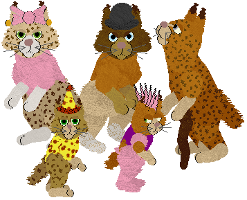
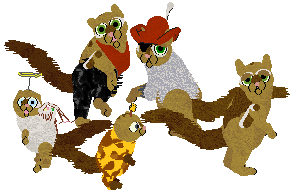
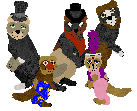
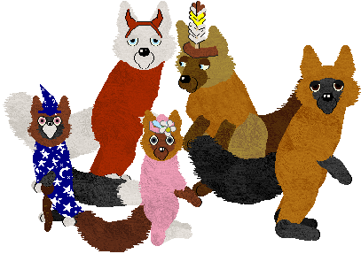
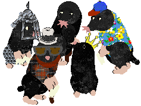
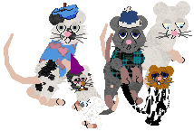
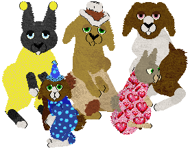
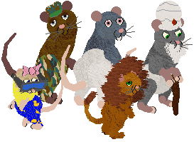
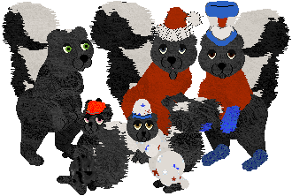
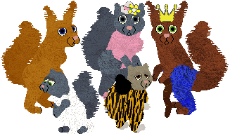

VPZ Research Center
| homeForest Folk
In the forest dwells a little society of animals ranging from the smallest to the more moderate in size. These animals can be dressed up or left "naked" and are designed for story telling and/or possibly role play. They are made from the original PFM balls, so movement can look odd at times (especially ears and tails), but overall, they move quite well for bipeds, something the game was not really designed for. ;-) Enough variations were added for interest but not so many to discourage breeding for fun new combos or color mutations.
These work in all the Catz programs (Catz 3, 4, and 5) and need to be unzipped into the Resource/Catz folder.
-------------------------------
~All these breedz are proudly made from the original PFM breedz! "From scratch." ;-) Please respect my hard work and give credit where credit is due
~Do not directly link to my files, and if you distribute them, please give me credit.
-------------------------------
Breedz won't show up in the AC? The most common problem is that the Bunny.cat breed file was changed or deleted. (If you also have Dogz, you need the Pig.dog file too.) If you don't have these breedz in your game, the last ones in the Adoption Center won't show up. (Breedz are listed alphabetically, so the "VPZ" breedz tend to be the ones that drop off.) You need to either reinstall your game or download the Bunny (and/or Pig) from http://www.dmwright.com/petz/
If you have trouble downloading, right-click the link and choose "Save Target As..." All the files should work. (Although I can't verify Petz 3 downloads, since I don't use that game.) Sometimes files are interrupted in download, and you get corrupted messages, especially for large files and especially if you use dial-up. TRY AGAIN LATER.
|
Bobcat Folk  *** Download *** (Uses "B+W Shorthair" sounds from Carolyn's Creations.) |
|
Chipmunk Folk  *** Download *** (Uses "PFMice" sounds from Carolyn's Creations.) |
|
Ferret Folk  *** Download *** Silent |
|
Fox Folk  *** Download *** Silent |
|
Mole Folk  *** Download *** Silent |
|
Mouse Folk  *** Download *** (Uses "PFMice" sounds from Carolyn's Creations.) |
|
Rabbit Folk  *** Download *** (Uses "cotton bunny" sounds from Carolyn's Creations.) |
|
Rat Folk  *** Download *** Rodent Sounds |
|
Skunk Folk  *** Download *** Silent |
|
Squirrel Folk  *** Download *** Rodent Sounds |